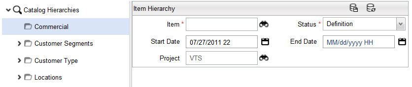
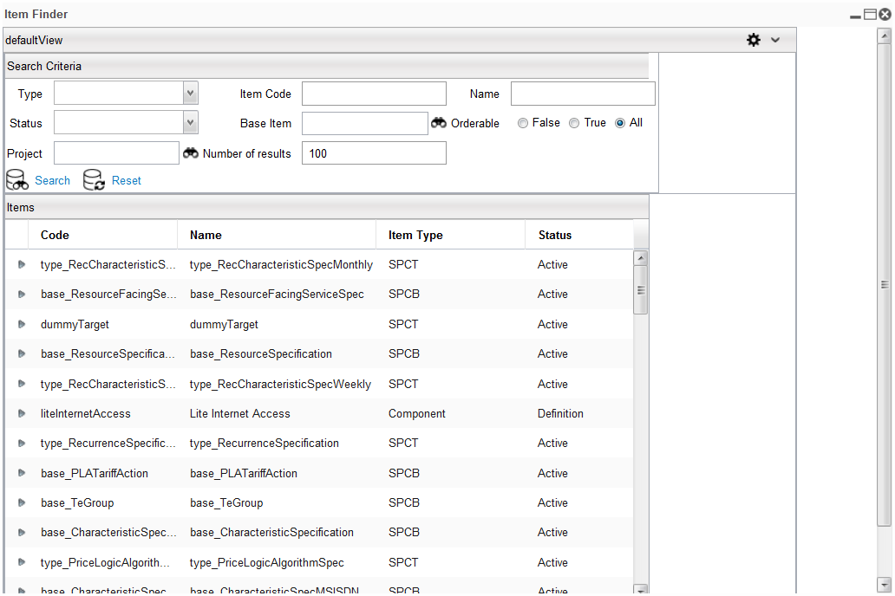

Once items are defined, you can select items and position them in the Catalog Hierarchy.
To add items (child node) to an existing Catalog Hierarchy, complete these steps:

| Field | Description |
|---|---|
| Item | The name of the Catalog Hierarchy item that is being added. |
| Status | Indicates the status of the hierarchy. |
| Start Date | The start date that the hierarchy is available. |
| End Date | The last date that the hierarchy is available. Note: The End Date field can be specified for an item hierarchy after the item hierarchy has been activated. The end date displays in the item hierarchy detail form after you have activated your project. |
| Project | The name of the project in which the hierarchy resides. |
|  |
| Field | Description |
|---|---|
| Type | This field appears when you add an item under a catalog hierarchy that has a Tree Type of Availability. The Tree field is mandatory and is set to Include by default when adding an item. See also Add Catalog Hierarchies. |
| Item Code | The unique code to identify the Catalog hierarchy's instance name. See also Catalog Queries. |
| Name | The unique name of the Catalog Hierarchy. |
| Status | Choose a status based on Component, Offer, Product. |
| Base Item | Displays the item from which the current component is extending, if applicable. Choose to make the base item Orderable by specifying False, true, or all |
| Project | The name of the project in which the hierarchy resides. |
| Number of Results | Displays the number of rows retrieved based on the search result. |
{kind=link}